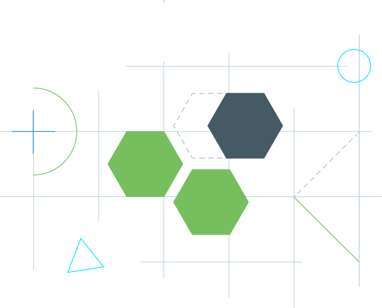

关于Android Jetpack
Android Jetpack是在Google I/O 2018中推出的新一代组件、工具和架构指导，旨在加快您的Android应用开发速度。Jetpack组件将现有的支持库与架构组件联系起来，并将它们分成四个类别：
关于Architecture Components
Architecture Components其实早在Google I/O 2017就推出了，是Jetpack中的架构库，可帮助你设计健壮，可测试和可维护的应用程序。主要用于实现管理UI组件生命周期和处理数据持久性相关的功能。

Lifecycles简介
生命周期感知（Lifecycle-aware）组件作为Architecture Components中最重要且最基本的组件，可以在诸如Activity和Fragment中生命周期变化的时候自动调整它的行为。这些组件能让我们写出更好组织，更轻量且更好维护的代码。
导入依赖
导入依赖只需要以下两行就好了，包含了Lifecycles、ViewModel和LiveData：
1 | // Lifecycles, ViewModel and LiveData |
可以通过gradle dependencies查看依赖树，我们可以看到extensions模块里面已经包含了livedata和viewmodel模块，我们也可以按需单独implementation某个模块。
1 | +--- android.arch.lifecycle:extensions:1.1.1 |
在Support Library 26.1.0及之后的版本中，默认已经添加了lifecycle的支持，诸如AppCompatActivity、Fragment、LifecycleService等都实现了LifecycleOwner这个接口。
1 | +--- com.android.support:appcompat-v7:28.0.0-alpha3 |
Lifecycle
上面提到了support包里面的Activity、Fragment都已经实现了LifecycleOwner这个接口，我们来看下接口的声明，非常简单，只有一个返回Lifecycle的方法：
1 | public interface LifecycleOwner { |
那Lifecycle又是什么鬼呢？简单来说，它持有了诸如Activity或者Fragment组件的生命周期状态信息，并且允许其他对象来观察这些状态，比较典型的观察者模式。
在Lifecycle里面主要用到了Event和State两组枚举常量来追踪关联组件的生命周期状态，可以用下面的时序图来直观的展示Event是怎样引起当前State的变化。
LifecycleObserver
那么如何监听Lifecycle中状态的变化呢？我们可以实现LifecycleObserver接口并通过Lifecycle().addObserver(observer)来实现监控生命周期状态的变化，当组件发出具体Event的时候，Observer即可收到相应回调。为了避免在回调中组件的生命周期出现异常，Lifecycle还提供了getCurrentState()获取当前的状态。
1 | class LocationListener implements LifecycleObserver { |
通过上面的方式，我们的LocationListener已经能自动感知生命周期的变化并做相应的处理，并且能把相关的逻辑从Activity或者Fragment中解耦出来，我们的依赖也只有Lifecycle这个抽象类。
实现自定义的LifecycleOwner
上面我们提到在Support Library 26.1.0及之后的版本中Activity、Fragment都已经实现了LifecycleOwner这个接口，如果我们自己的某些类需要实现Lifecycle的机制，可以实现LifecycleOwner接口并使用LifecycleRegistry来完成生命周期事件的转发，如下代码所示：
1 | public class CustomActivity extends Activity implements LifecycleOwner { |
LifecycleRegistry是什么鬼？
从源码上来看，它是Lifecycle的实现类，主要用于处理多个observers的添加/删除，以及新增了handleLifecycleEvent()及markState()方法以实现生命周期事件发送及状态转换。
1 | public class LifecycleRegistry extends Lifecycle { |